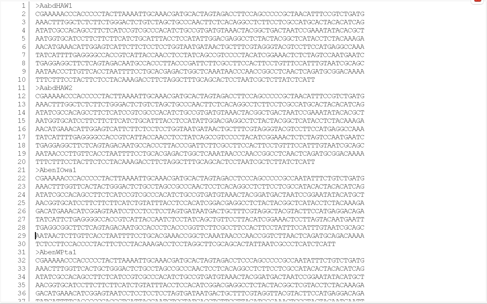

6 Estimating evolutionary trees
includes outline and personal notes
DRAFT 20250113
6.1 Introduction
In the previous chapter we learned how to read and interpret phylogenetic trees in general. Phylogenies have historically been inferred by analyzing morphological character matrices using maximum parsimony (the principle of parsimony states that the best phylogeny explains an observed character set with the fewest evolutionary changes). Today, however, the majority of phylogenetic analyses are based on DNA sequence data, because they provide a large number of informative characters. When an alignment varies among taxa, every altered base pair potentially holds useful information about relatedness, and it is much easier to assemble the large data sets needed for phylogenetic inference with DNA sequencing as opposed to the analysis of morphological or other phenotypic traits.
In this chapter we will learn the basics of how phylogenies are constructed. We will be focusing primarily on the use of molecular/genomic data since it is pretty much agreed that the most efficient and reliable data for reconstructing evolutionary trees is using molecular data, be it DNA, protein, or even whole genome data. However we will also briefly discuss the use of morphological data since there are many instances in which we might be limited to morphological characters since molecular data is either unavailable or impossible to generate (think fossils here).
In the past, constructing evolutionary trees used to be a difficult, tedious, and oftentimes contentious exercise. Though constructing phylogenies is still not particularly easy today, it is infinitely easier than say 15 or 20 years ago. The ready availability and ease of use of increasingly sophisticated and powerful computer programs with GUI front ends combined with stunning computing power available on your desktop has made phylogeny construction almost routine. Almost. There still are a number of very important concepts, issues, and theory we need to understand in order to properly interpret and have faith in your results. Simply clicking a button and getting an answer is powerfully tempting, but it is an empty academic exercise unless you know the whats and whys.
Phylogenetic theory can be mind-numbingly complex. In order to really dig into this complicated but interesting field would be the place for a dedicated course in phylogenetics or molecular/genomic evolution. For our purposes we will only briefly go over the major concepts so that when you read a paper today in evolution that includes some kind of phylogenetic analysis, you will have a pretty good idea what the authors did and why they did it.
6.2 Types of data used in constructing phylogenies.
6.2.1 Morphological characters
In the past, morphological traits were the only type of data available for estimating evolutionary trees. That most certainly is not the case today. Generally speaking, though the use of molecular data is probably the most comon appraoch for constructing phylogenies today, morphological data is still routinely used. This is particularly true when molecular data is unavailable, such as for fossils. It is not uncommon at all to see analyses published that are a combination of both morphological and molecular data, so called supertree analysis. For example, a very detailed study on the relationships of Cetacea among mammals used the supertree approach and included both types of data ( (Spaulding, O’Leary, and Gatesy 2009) ).
The methods used in the analysis of morphological characters are the same for both extant and extinct taxa, and usually involve what we refer to as discrete data. Discrete data naturally fall into discrete categories, like the presence of absence of some characteristic, counts (e.g. number of hard rays on a dorsal fin), color or color patterns, etc. These types of data are usually represented in datasets as 1/0 for presence/absence, or integer numbers of counts, or integers (usually 0-9) for the different character states (this is referred to as character coding, which seems like it should be pretty straight forward but in fact can get quite complicated). When integers are used, they usually have no real numerical value associate with them (unless it is count data), but rather simply serve as categories for character states.
In contrast, continuous data is when you actually measure or weigh some characteristic, for example body size, growth rates, length, or any other measurable quantitative feature. Continuous character data can be used for phylogenetic analyses, but they require a unique set of models (Brownian motion [BM] or Ornstein-Uhlenbeck [OU] processes, but do not worry about this) and approaches, which we will not be covering here. They most certainly have some advantages, including the preservation of phenotypic variation (you do not have to lose information by converting the character states to discrete values, which can oversimplify complex variation), the models for continuous trait evolution (such as BM and OU) are well-developed and provide robust frameworks for phylogenetic inference, and they may be more easily integrated with molecular.
Using continuous characters for constructing phylogenies is relatively uncommon but maturing area for phylogeny construction, and a very active of research in phylogenetic biology.
6.2.2 Molecular characters
It is generally accepted that molecular/genomic data, in particular DNA sequence data, are the best data to use for reconstructing phylogenies. This opinion was not always the case, and in fact was quite contentious at one time. Except for a few holdovers from outdated arguments, it pretty much is a decided issue today. In addition, the ability to collect large amounts of high quality molecular data is fairly routine today and requires little specific expertise or background in molecular biology. Again, this certainly was not the case in the past. The fundamental methods of PCR, cloning, and library construction, the ready availability of commercial vendors and core facilities for all manner of DNA sequencing techniques, and the streamlining of protocols to go from tissue sample to data sequence file make for the collection of DNA sequence, and to some extent genomic data, infinitely easier than it used to be. It is now fairly routine and readily available for any interested researcher to dive into if they are interested in constructing a phylogeny.
Molecular data is actually a much broader class of data than just DNA sequence data, though generally speaking DNA data is the most common data today. There is also protein sequence data (which of course can be generated from DNA sequence data), which is much more difficult to generate per se. The methods and chemistry that allow for the automation of DNA sequencing do not exist for the routine and automated sequencing of proteins - at least not yet. This is currently a very active area in research in chemistry and biochemistry with some very promising new technologies poised to become mainstream soon (e.g. Oxford NanoPore protein sequencing).
Other types of molecular data that were used routinely for phylogenetic analysis in the past include: allozymes, restriction fragment length polymorphisms, AFLPs and the general family of random amplification products, and DNA hybridization. These are pretty much all historical methods rarely used today. See (Schlötterer 2004) for more information on the various molecular markers used over the past couple of decades. Though the data from these various outdated methods can be analyzed using the methods we are about to discuss, we will pretty much just focus on DNA sequence data here.
DNA, RNA, or protein sequence data falls into the general category of discrete character data, as do most of the other types of molecular data listed above.
We will not discuss the actual methodologies of collecting DNA sequence data in this chapter, but will briefly on the chapter on the evolution of DNA sequences. In this chapter we will only be addressing the basics of how to construct evolutionary trees.
6.3 Accurately estimating evolutionary trees
Generally speaking, it is easy to construct an evolutionary tree today; it is now kind of point-and-click. The real issue is doing it right. Like playing the saxophone, easy to play, difficult to do it right. Nonetheless, there are a couple of key components associated with constructing a reliable evolutionary tree. Here are just a few:
- Choose the type of genomic regions appropriate for your question. There is a lot of variation in the rates of molecular divergence across the genome. Some regions of the genome evolve quite rapidly, while others at a substantially lower rate. For example, protein coding regions (exons) tend to evolve much more slowly than pseudogenes. Likewise there is a large degree of variation among genes themselves in terms of rates of divergence. Some genes are highly conserved and tend to evolve very slowly (e.g. ribosomal 16s and 18s regions), while others evolve quite rapidly (e.g. MHC gene regions and DLOOP in mtDNA). There are groups of genes that have been specifically identified as highly conserved across broad phylogenetic groupings that are now routinely used to estimate deep level phylogenies (ref). Likewise, there are regions of the genome known to evolve so rapidly that they are all but useless for deep level phylogenies and are best used for estimating patterns of kinship among individuals of a population or geographic variation within and among populations within a species.
The key is to use genomic regions that are the most appropriate for the question you are asking. Generally speaking, unless you are doing population level phylogenetics, it is best to use characters that change rarely, be those molecular or morphological. Using characters that change infrequently reduces the likelihood of homoplasies caused by reversals. Characters that frequently alternate between states make it difficult to reconstruct an accurate evolutionary history due to an abundance of reversals and associated noise.
The trend today is moving away from phylogenies based on specific regions of the genome to using whole genome sequencing (WGS). This is probably the best way to assure you capture the entirety of the phylogenetic signal in the genome. However WGS analysis is whole other creature when it comes to actually estimating the phylogenies and the concepts involved, and is well beyond the scope of this text. We will not spend any time on what is called phylogenomic methods even though it is rapidly becoming the standard for phylogenics today. Instead we will focus on the classical approach based on defined genomic regions.
Knowledge of Characters and Organisms: Familiarity with the organisms and their traits is incrediby helpful when interpreting the results of a phylogenetic analysis. By understanding the organisms themselves, you can gain valuable insights into the important questions that can be asked, into what your phylogeny is really telling about the evolution of the group or patterns of divergence. This is true for both molecular and morphological data, but certainly more so for morphological data. Sequencing for sequencing’s sake is admittedly interesting in of itself, but knowing your critters makes the science all that much better and rewarding.
Tree Reconstruction Methods and Tools: A solid understanding of various algorithms and criteria used to estimate phylogenetic trees is crucial. Knowing at least the basics of the methods allows researchers to determine which tree best represents the evolutionary relationships given the data used and the assumptions of the tree building methods. This is what we will be spending the remainder of this chapter addressing, the basics of the models and methods to constructing evolutionary trees.
6.4 Overview of analyses
The method one uses to estimate evolutionary trees is deeply dependent on the question being asked, the type of data used (the nature of the data: morphological, molecular, or a combination of the two), and the size of the dataset (the number of taxa or OTUs and the number of characters or sequence length). A generalized work flow for the construction of a phylogenetic tree can be seen in the figure below.
6.4.1 Classification of methods
One way of organizing the various methods, but probably not the best, is by the data type.
For morphological data, the primary method is maximum parsimony (MP), along with its various forms (e.g. continuous data methods as mentioned above). We will first look at how MP works in general with a nod toward morphological data before discussing molecular data techniques, though the two are related as you will see.
For molecular data, there are two main categories of methods used for phylogenetic tree inference:
- (1) Distance-based methods (such as the NJ method and the UPGMA method). These methods first convert the feature matrix into a distance matrix to represent the evolutionary distances between pairs of species, and then combine clustering algorithms to analyze the species under study and infer the phylogenetic tree.
- (2) Character-based methods (such as the parsimony method and the likelihood method). These methods typically generate a large number of hypothetical trees based on an algorithm (such as the MP method and , Maximum Likelihood [ML] method) and then induce an optimal tree according to certain criteria.
Focusing mainly on molecular data, and DNA sequence data in particular, the figure below provides a convenient summary of the two approaches mentioned above..
We have already talked about discrete characters above, but what is a “distance data” type? What do we mean by “Tree searching” versus “Clustering algorithm”? To answer these questions, let’s first go over the method of Maximum Parsimony (MP) since it is used for both morphological or molecular data, and understanding how MP will set the groundwork for understanding some very important concepts that we will need later on when discussing some of the other models.
But before embarking on our discussion about MP and the other phylogenetic methods, looking back at Figure 6.1 we see that a very important first step, after acquiring your sequence data, is to align your sequences. Multiple sequence alignments (MSA) are an often under-appreciated critical first step in any phylogenetic analysis. Accurate MSAs form the basis for inferring evolutionary relationships, and multiple methods exist that are commonly used to generate consistent results.
6.4.2 Multiple Sequence Alignment
The starting point of any of the methods discussed in this chapter for molecular data, including MP analysis, is the construction of what is referred to as a Multiple Sequence Alignment (MSA) file. MSA is the computational process of aligning three or more biological sequences (DNA, RNA, or protein) to identify regions of similarity and differences among them. You can think of it as a way of determining position homology among your sequences.
Why would you need to do this? Obviously, whether morphological or molecular data, you want to use homologous characters for your analysis. With morphological data this is relatively straight forward to some degree. With molecular data you will be dealing with DNA sequence data that is either downloaded from online databases (like NCBI GenBank) or raw data files derived from sequencing. Either way you want to be sure that (a) homologous regions of the genome (e.g. gene regions) are being compared across the samples, and (b) that homologous nucleotide positions for each gene region are aligned among the samples so you are comparing the same positions from the same genes. This is basically what a MSA program does. Programs that perform MSA arrange DNA sequence data by similarity, matching up homologous nucleotides across samples. Aligned sequences are arranged in a matrix, where sequences from different samples are organized in rows and homologous nucleotides in columns. As an example, the figure below shows an image of an unprocessed data file that is not aligned, while the figure on the right is the results of an MSA on the same data.

The figure on the left is of a FASTA file of mtDNA sequence data collected using PCR direct seqeuncing from a group of damselfish in the genus Abudefduf. A fasta file is standard data format used in DNA sequence data. Note that some of the sequences do not start with the same sequence. The image to the right is a MSA of the same data algined using the program MUSCLE.
Constructing MSAs operationally is quite easy today due to the ready availability of user friendly programs, but it is not a trivial exercise by any means. Almost all of the various methods weigh the differences found among sequences taking into consideration the types of nucleotide (or amino acid) differences, as well as insertions and deletions. Some also take into consideration structural characteristics and other properties associated with the genomic region being considered.
The technical details of the various alogorithms used in constructing a MSA are far beyond this text. You can get a sense of the complexity of MSA from this Wikipaedia entry. Rather than getting too lost in the weeds of this complex and not without controversy topic, let’s just leave it that there are numerous approaches to constructing a MSA with various approaches and and philosophical underpinnings. It is my experience that most researchers today pay little attention to the algorithm they use or its assumptions for making a MSA, and simply fall back on the industry favorites with default options.
Below is a list of some of the most widely used programs for performing multiple sequence alignment:
1. Clustal Omega: A progressive alignment tool known for its speed and scalability, suitable for large datasets.
1. MUSCLE: Provides high accuracy and speed, often used for protein and nucleotide alignments.
1. MAFFT: A progressive-iterative alignment tool that supports large-scale alignments with high accuracy.
1. Mauve: Designed for aligning whole genomes, especially useful for microbial genomes.
Implementations of these programs can be easily found online for download to run on your desktop, in online web apps (for example, EMBL Explore Sequence Analysis Tools has instances of most of these program available for free), or as part of GUI packages like Unipro UGENE or MEGA. Both these GUI apps are free, tend to be incredibly easy to use, and perform most of what we will be discussing in this chapter.
Once you have produced a MSA of your data, you are not done yet. Best practices dictate that you should take a close look at the resulting MSA to make sure the program worked correctly and to QC the results. Pretty much all the programs mentioned above have options for manually editing a MSA, so take advantage of them. Carefully review your alignment to see if there are regions that may require manual editing, fine tuning, or trimming. Do not just accept what the program gives you. Insufficient editing/trimming may introduce incorrect or noisy alignments, which can lead to all sorts of problems with the downstream analyses.
Once aligned, trimmed, and edited, the aligned DNA or protein sequences can be used for any of the methods discussed here, as well as to identify variants that can be useful for many population genetic analyses.
We will talk a little about the data formats for aligned sequence data in lab. Generally speaking it depends on the specific programs you will using. The standards are called nexus formatted files or aligned FASTA files. GUI programs like MEGA often use their own formats, but have options for importing or exporting data in various other formats.
Once the MSA is completed, the next steps are to determine the appropriate algorithms for phylogenetic tree inference.
6.5 Maximum parsimony (morphological and molecular data)
Recall from the previous chapter our use of the concept of parsimony as it pertained to mapping characters on a phylogenetic tree: that the most parsimonious explanation for the evolution of a character on a phylogeny was the one that required the fewest number of evolutionary events (changes/steps). We can take this same thread of logic now and apply it to estimating a phylogeny given a set of characters, be they morphological or molecular: among the various phylogenetic trees that can be imagined for a group of taxa, the best estimate of the true phylogeny is the one that requires us to postulate the fewest number of evolutionary changes.
Rephrasing the above, we can describe maximum parsimony as follows: find the tree that minimizes the total amount of evolution required to create the tree, i.e. the fewest number of evolutionary changes. That sounds fairly straight forward, but let’s clarify it a little. What we have to begin with is a dataset that consists of the value of the character for each taxa (OTU) under consideration. Think of it as a spreadsheet with taxa names defining the rows, and character scoring for each of the homologous characters as columns (for example, the table on the lower right of Figure 6.3).
The formatted data file we use for many of the programs to perform a parsimony analysis look a lot different from our imaginary spreadsheet, though there are some programs that will actually take a spreadsheet-like data file (called a “.csv” file). There are standardized data formats that most programs will accept, the most popular for morphological data being the “nexus” format. If you are interested, you can find information on the nexus file format here. To see what an actual working nexus file looks like, you can find one here. Again, depending on the program you use, aligned molecular data can be in nexus format as well for MP analysis.
Given a set of characters, be they morphological characters or aligned DNA sequences, parsimony analysis works by determining the fit (number of steps or changes) of each character on a given tree by mapping the character on the tree evoking parsimony. If we do that for all the characters in our dataset, we can then sum the total number of changes for all the characters mapped on that tree. This will give us a value called the tree Length. If we repeat this same process for a bunch of different trees with different topologies, then we would end up with a estimate of the tree length for each of the trees. The most parsimonious tree is the one that requires the fewest number of changes, or reworded has the smallest or minimum tree length needed to explain the observed distributions of all the characters. We have used the criterium of Maximum Parsimony to choose the best tree (shortest tree) from a group of possible candidate trees.
The slide below taken from Futuyma and Fitzpatrick (2017) will help clarify the process:
In this figure taken from the course slide deck, there are three possible trees we are assessing for a molecular dataset that includes 5 taxa and 7 characters (aligned sequences from a region of the genomes). We take each character one at a time and map the changes along each of the 3 possible trees, evoking parsimony each time to determine the character state changes along the tree. After mapping all 7 characters, we sum the total number of changes (tick marks in this instance) along each tree to calculate the tree length. The tree with the shortest tree length (total number of changes) is then considered our best guess for the tree describing this dataset evoking maximum parsimony. In this specific case we would choose Tree 1 as our most parsimonious tree since it had the smallest tree length (total number of changes) along the tree.
By way of another example only now using morphological characters:
In this example we are assessing only two different trees, mapping the morphological characters onto the tree as we did with the molecular data evoking parsimony. Once again, when we look at the tree lengths for the two trees, we find that tree B, the accepted phylogeny, requires only 10 steps, while tree A, the hypothetical tree, requires 14 steps. We would then accept tree B as the most parsimonious tree based on the data set.
To reiterate, in maximum parsimony, among the various phylogenetic trees that can be imagined for a group of taxa, the best estimate of the true phylogeny is the one that requires us to postulate the fewest number of evolutionary changes.
The above two examples are pretty simple and straightforward, and with so few characters and taxa, easy to do by hand. In reality the datasets used are much larger and complicated, and you would never try to do them by hand. There are lots of programs out there to do the parsimony mapping for you, as well as numerous other options. More on this later.
Two points before moving on. It turns out (not by coincidence) that the best tree defined by maximum parsimony has two important consequences:
1. Maximizes number of shared derived characters (synapomorphies), the basis of defining monophyletic groups)
2. Minimizes number of homoplasies
Recall from the previous chapter that homoplasies reflect shared character states not due to common ancestry. We most certainly want to down-weigh those when considering the best tree since they will cause confusion as to patterns of descent. However, this is not to down-weigh the importance of homoplasies. Since they are often due to convergent evolution or reversal, they can be exceptionally interesting to study.
Likewise it is very good that we are maximizing the number of synapomorphies as these are the characters that define monophyletic groupings. So a maximum parsimony tree potentially maximizes the number of monophyletic groups.
To summarize the above, for maximum parsimony we take the following steps:
- map character states for the various characters on a group of trees evoking parsimony
- count the total number of character state changes along the various trees (tree length)
- the shortest tree is probably the correct tree
We use this same logic for either morphological characters or DNA/protein sequences.
6.5.1 Choosing trees
Though the above hopefully makes good sense, you probably are asking yourself “how do we find a tree, or a bunch of trees, that we can then map our characters on to determine the best tree?” There are a couple of approaches one can take. You might have a couple of a priori hypotheses you wish to assess, as we did with Figure 6.4 where we were evaluating only two alternative hypotheses. This is all well and good, but does not guarantee that either of these trees are actually the shortest of all possible relationships. There may be another tree out there in tree land that might be shorter than either of these two, and therefore a better representation of the relationships.
What if we have no a priori hypotheses, then how do we choose which trees to evaluate? Conceptually, the answer seems simple: evaluate all possible trees showing all possible relationships of the taxa. The problem here is the total number of possible trees for a set number of taxa, or in other words number of alternative hypotheses (i.e., alternative tree configurations). The number of possible phylogenetic trees grows unimaginably large for even moderately sized data sets. For a data set with \(n\) taxa, the total number of possible (unrooted) trees is:
\[ \prod_{i=1}^{n}(2i-5) \]
For example, the figure below is a table showing the possible number of unique trees for just a small number of taxa.
Notice that the figure includes both rooted and unrooted trees. Considering just the rooted trees, for 4 taxa we see there are 15 possible unique trees demonstrating the relationship among the taxa. That would be a lot of trees to map characters on if doing it by hand (which you would never do). Four taxa is a very simple dataset, no where near what modern study would look like. The problem gets even worse when we look at more reasonably sized datasets in terms of number of taxa. The table below shows just that.
Even for a moderate number of taxa, the total number of unique trees is impossibly large to assess each and every one. For just 20 taxa, there are more possible tree configurations than human cells (that is, all cells from all humans). The number of possible trees eclipses the number of atoms in the universe at just over 50 taxa. Clearly this idea of testing all possible trees is untenable, and we need an alternative strategy.
To formalize, to find the most parsimonious tree for a given dataset, there are three generalized methods:
- Exhaustive Search: This involves generating and comparing all possible trees. However, this approach becomes computationally unfeasible as the number of taxa increases, and all but impossible for just 20 taxa or more where the number of possible trees approaches astronomical figures.
- Branch and bound: This is an alternative to an exhaustive search that is not really worth going into since it is computationally intensive and unfeasible as the number of taxa increases, generally getting you no more ahead of the game as an exhaustive search.
- Heuristic Search (Algorithms): These are a group of approximate methods to search for the shortest tree. These algorithms iteratively refine trees to improve their accuracy. Starting with a basic starting tree, branches are rearranged and swapped in a systematic way, and criteria are used to evaluate whether the new tree is better than the previous. If an improvement is found, the changes (the new tree) are kept; otherwise, you retain the previous tree. You then continue the cycle of rearranging and swapping branches on trees and comparing them to best tree from the previous cycle until it becomes difficult to find a better tree than the one you are holding on to, or you just give up.
We will not go into any of the details around how exactly heuristic searches are performed, but obviously you let a computer do all this. Heuristic searches tend to do a reasonable job of finding the shortest or near shortest tree, or at least that is what theory and experimental phyogenetics tells us. The available programs for performing maximum parsimony analysis usually come with numerous options for performing various flavors of heuristic searches, and you should refer to their manuals before using them to determine what is your best strategy and options.
Let’s formalize this logic into something akin to a roadmap to a computer program (algorithm) to perform parsimony analysis.
1. guess at a tree
2. evaluate the tree by mapping character state changes along branches of tree, evoking parsimony;
3. calculate the total tree length (call that value *X*)
4. take another tree, or make alternative guess (hypothesis) at how the tree might look
5. evaluate this tree as in steps 2 and 3 (call that vaue *Y*)
6. compare the two trees by comparing *X* to *Y*
7. accept the shortest tree as better approximation of the two (parsimony); keep that tree and throw out the other
8. repeat steps 3 – 7 for some defined number of trees until you run out of trees, are convinced you have found the shortest tree (most parsimonious tree), or are just tired of searchingThe end result of these steps will be a tree or group of trees that will be our best estimate of the relationship among the taxa based on maximum parsimony.
A couple of closing points on maximum parsimony before moving on.
Equally parsimonious trees : It is entirely possible and not at all uncommon that using a heuristic search will result in not one but multiple trees of equal total length. We refer to these trees as equally parsimonious. Since they are equally parsimonious, we have no way of determining which is a better representation of our given dataset. To deal with these, we have a series methods to produce what is called a consensus tree. This is exactly as it sounds, it is a consensus of all the equally most parsimonious trees. There are different types of consensus criteria, though the one you are probably most familiar with would be “majority rules” consensus. Most programs the perform MP give options for different consensus criteria. Regardless, the end result is a tree that contains polytomies for the unresolved nature of the equally parsimonious trees. Polytomies may not be desirable, but if that is what the data says, it is what is says. There are recommendations for trying to resolve polytomies, but this usually involves reanalyzing your dataset using some other model, or collecting more data.
There are different flavors of parsimony out there, none of which are really worth our time to go over for this class. One worth mentioning though is called Weighted Parsimony. In Weighted Parsimony, you a prioir assign numerical weights to the various characters and/or type of changes (character states) for those characters. When determining the tree length, the values being summed are not just changes on the tree, but weighted changes (e.g. change times the weight assigned). For example, with molecular data, when looking at a protein coding region of a genome, you might want to assign different weighting factors to first, second, and third codon positions since we know that the three codon positions tend to evolve at different rates. Or you might want to weight transitions differently than transversions, or one gene region more than another in your dataset. It is a little more difficult to assign weights to morphological characters, but it certainly is justifiable. By taking a weighted parsimony approach, you are inherently using a (potentially) more realistic model of character state changes, which can result in more accurate results in terms of finding the shortest tree. And again, you do all this using options in the software you are using.
We discussed MP with respect to both morphological and molecular data, but today it seems that MP is rarely used for molecular data to estimate phylogenies. Due to the nature of DNA sequence data and the increasing size of most datasets today, MP is not the preferred or most efficient way to estimate phylogenies. Today the recommended best practices for constructing evolutionary trees is using either distance based, maximum likelihood, or Baysian analyses, which is where we will be going next.
6.6 Distance based methods
Returning back to Figure 6.2, the next method to discuss is what we refer to as distance-based methods, which include both clustering and tree search methods. These methods are best suited over MP for molecular data for a number of reasons, and though they can also be used for morphological data using the appropriate models for constructing the distance matrix, it is strongly recommended against. The resulting trees from morphological data may not be a reflection of evolutionary relationships as much as just morphological similarity (and therefore not necessarily distinguishing between synapomorphies and homoplasies). Though the patterns of morphological similarity may be interesting and useful to study, we are interested in reconstructing evolutionary relationships.
The fundamental steps in estimating an evolutionary tree using distance based methods, focusing first on the clustering methods, can be summarized as follows.
1. perform a multiple sequence alignment (MSA) of your data
2. calculate a pair-wise distance among taxa using a specified model of sequence evolution
3. use an algorithm to cluster taxa by overall similarity/distance into groups of more similar taxa
4. goal: minimize the total distance among all taxa, *i.e.* total length of the treeGenerally speaking, distance methods group species based on genetic similarity, with similar species clustering closely together on a phylogenetic tree and dissimilar species being separated by longer branches. In phylogenetics, the degree of genetic similarity is often called the phylogenetic distance, which is the number of nucleotide (or amino acid) differences between two species. To infer phylogenetic trees, pair-wise phylogenetic distances are first calculated among all species in a data set, yielding a phylogenetic distance matrix. The distance matrix can then be converted into a bifurcating tree with various algorithms.
6.6.1 Estimating phylogenetic distance
Once you have a MSA of your sequence data, the next step is to calculate a pairwise distance among the taxa using an appropriate model of DNA evolution. (NOTE: we can easily use protein sequence as well, but for brevity’s sake let’s just focus on DNA sequence for the time being.) A DNA pairwise distance is a quantitative measure of the genetic difference between two DNA sequences. It is typically expressed as the proportion of nucleotide sites at which the sequences differ, or as the number of substitutions per site. You are effectively comparing the level of sequence divergence between all possible pairs of taxa in your dataset.
What is meant by an appropriate model of DNA evolution? Like most things in molecular phylogenetics, this can get a little complicated. However, it is worth taking the time to understand the fundamental basis of DNA substitution models since they play a very important role in constructing evolutionary trees as well as understanding rates and patterns in DNA and protein evolution.
Before exploring the various models of sequence evolution, it will be helpful to briefly discuss a couple aspects of DNA substitution patterns and evolution that will help make sense of why we have different models of DNA evolution.
6.6.1.1 Multiple substitutions
Because there are only 4 different nucleotides (A, G, C, & T), as two sequences diverge over time due to the independent accumulation of mutations, it is unavoidable that there would be multiple substitutions that may occur at the same site. The figure below shows some of these possible multiple substitution events.
Six kinds of nuceotide substitutions. In each case the ancestral nucleotide was A. In all except the case of a single substituiton, the number of substitutions that actually occurred is greater than would be counted if we just compared the two descent sequences. I the lover three cases the nucelotides are identical in both descendant sequences, but this similarity has not been directly inherited from the ancestral sequence, leading to a homoplasy. From Page & Holmes (1998).
The end result of multiple substitutions is that over time there will be a tendency for the relationship between sequence divergence versus time will begin deviating from linear, eventually plateauing out such that you can no longer estimate how long two sequences have diverged from each other. We can see this in the figure below.
6.6.1.2 Differences in rates of transitions and transversions
Recall from your basic genetics course that the four DNA nucleotide bases (A, G, C, & T) fall into two categories based on their chemical structure: purines (G & A) and pyrimidines (C & T). We classify substitutions (mutations) within and among these two groups as transitions (mutation from a purine to a purine, or from a pyrimidine to a pyrimidine) and transversions (going from the purine to a pyrimidine, and vice versa). A clean way to visualize these can be found in the following figure.
According to this figure, we should expect to find twice as many possible transversions than transition (8 vs. 4) if mutation is random. However, this is not the case; generally we find transitions appear to outnumber transversions in real data. We have a pretty good why this is the case, but the explanation lies beyond the scope of this text. The important message here is that there is a transition-transversion bias that we need to take into consideration as well to accurately model patterns of DNA evolution.
In addition, the data also suggests that rates of transitions more quickly begin plateau out over time due to multiple hits compared to transversions.
For these reasons, any model of DNA evolution should take into considerations the number of transitional and tranversional changes between OTUs.
6.6.1.3 Rates of change among nucleotides can vary
Not only is Figure 6.8 is a good heuristic for visualizing transitions and transversions, it provides a road map to begin modeling substitution rates among the various nucleotides. Figure 6.8 does not suggest that there are any differences among the substitution rates (e.g \(P_{AG}\) compared to \(P_{GA}\)), but obviously that could be the case. We can represent these rates of substitutions as a matrix that can then be used in various maths (matrix algebra) to analyze various models that accounts for differing rates in nucleotide substitutions (Figure 6.10).
The matrix shown in Figure 6.10 is incredibly useful as it allows us to vary any of the rates of nucleotide substitution in an effort to more accurately model DNA evolution. We will come back to this figure as warranted as we now begin discussing the various models of DNA evolution and what they correct for, starting with the simplest and moving on to increasingly complicated models with lots of parameters (a parameter might be for example different rates for transitions versus transversions, or differences in frequencies of the four nucleotides).
6.6.2 The models
Percent divergence (p; Section 6.6.2.1)
Jukes-Cantor (JC; Section 6.6.2.2)
Kimura’s 2 Parameter (K2P; Section 6.6.2.3)
Felsenstein 1981 (F81; Section 6.6.2.4)
Hasegawa, Kishino, and Yano (HKY85; Section 6.6.2.5)
General Time Reversible Model (GTR; Section 6.6.2.6)
Without going into too much detail, below we will very briefly discuss some the more useful models you will find in the literature. We will avoid just about all the theory and equations, but understanding the various models and what they correct for will be helpful to understand the whats and whys when reading papers.
6.6.2.1 Percent divergence
The simplest estimate of pairwise divergence between two sequence is the percent sequence divergence \(p\). This is simply taking the total number of nucleotide positions that differ between two sequences divided by the total number of nucleotide sites compared. It is a simple percentage, uncorrected, and at first blush makes good sense. However, we know quite a lot about how DNA evolves over time, and it turns out simply calculating the percent sequence divergence can be quite problematical. One primary reason is multiple substitution problem referred to above which results in a nonlinear relationship between time and sequence divergence. For that reason alone \(p\) should really only be used for very closely related sequences, for example from within a population.
6.6.2.2 Jukes-Cantor (JC)
The JC model is one of the simplest models. It is referred to as a single parameter model since it effectively makes a single correction, for multiple substitutions. It assumes all substitutions are equally likely, all nucleotides occur at same frequency, and has a single parameter - the rate of substitution (\(\alpha\)). I promise, this will be one of the few where we will show the equation and the substitution matrix, just so you can get a sense of how we use the matrices when calculating the level of divergence.
6.6.2.3 Kimura’s 2 Parameter (K2P)
The JC model corrects for multiple hits, but unfortunately is not the able to correct for some of the other known biases that can lead to non-linearity. For that we need more complex models estimating other parameters to correct for know biases. The K2P model was proposed to account for the transition-transversion bias previously discussed. It does so by adding parameters to account for the difference between transitions (\(\alpha\)) and transversions (\(\beta\)), and assumes that the nucleotides occur in equal frequencies
I know, I promised we would not show the equations or matrices involved, but just one more. After this, you should have a good sense how this all works.
6.6.2.4 Felsenstein 1981 (F81)
The F81 model was also proposed around the same time as K2P. It attemoted to address a known bias caused by unequal frequencies of nucleotides. It assumes the rate of transitions equal transversions similar to the JC model. The model allows for different frequencies of nucleotides by having different rates in the \(f\) vector such that \(f=[\pi_A \; \pi_C \; \pi_G \; \pi_T]\).
6.6.2.5 Hasegawa, Kishino, and Yano 1985 (HKY85)
This model is sort of a hybrid of the K2P and F81 since it accounts for different rates of transitions (\(\alpha\)) and transversions (\(\beta\)) as well as unequal nucleotide frequencies \(f=[\pi_A \; \pi_C \; \pi_G \; \pi_T]\).
6.6.2.6 General Time Reversible Model (GTR)
The GTR model is similar to the HKY85 model except that it allows different rates of substitutions between the various nucleotides such that you do have a total six different substitution parameters, one for each of the possible pathways of substitution for the different nucleotides. For example, looking at (SubstMatrix?), \(P_{AG} = P_{GA}\) and \(P_{CT} = P_{TA}\); there are 4 parameters for the transversion changes, 2 for the transition changes. Unequal frequency of nucleotides are also corrected for.
6.6.2.7 Parameter rich GTR
This version of the GTR model has a total of 12 paramters, one for each path between nucleotides in both directions. For example, looking at (SubstMatrix?), \(P_{AG} \neq P_{GA}\) and \(P_{CT} \neq P_{TA}\).
The figure below sumarizes these 5 different models and what they account for.
There are other models that are also routinely used as well. For example, the help files in MEGA is a convenient resource for describing the above models as well as some others. Wikipaedia has a pretty thorough entry for Models of DNA evolution you can also check out.
6.6.2.8 Additional corrections
All the above models have the following inherent assumptions:
All nucleotide sites change independently
Substitution rates are constant over time and in different lineages
Base composition is in equilibrium
The conditional probabilities of nucleotide substitutions are the same for all sites and do not change over time
These assumptions do not always hold, so it should not be surprising that other correction factors have been developed to try to make the models more realistic. A couple of these corrections are:
Variation in substitution rates. We will hopefully get to discuss this a little more in the chapter on molecular and genomic evolution, but for now, we find different rates of substitution across the genome, and should try to account for these. Some genes evolve faster that others. Some genomic regions evolve faster than others (e.g. third position exon sites have much slower rates of substitutions than do introns or pseudogenes). Without going in to any details, the correction for rate variation is estimated by what is referred to as a gamma shape parameter termed \(\alpha\). Low \(\alpha\) corresponds to a large rate variation; as \(\alpha\) gets larger, the range of rate variation diminishes. There are ways to estimate the parameter \(\alpha\) given the data, and most programs will allow the option to include the gamma correction. When this correction is used, you will usually see the authors make reference to using e.g. the GTR+\(\Gamma\) model, meaning these used the General Time Reversible model correcting for variation in substitution rates.
The proportion of invariant sites, i.e. the percent of nucleotide sites that are free to vary, can very much impact the difference between observed levels of divergence and divergence time. The higher the percentage of nucleotide sites free to vary, the closer the relationship gets to linearity (that correction zone shown in Figure 6.7). Most program will allow for this corrections as well.
Codon position. The last model correction we will mention is not really a correction per se, but a modification of the K2P model specifically used for protein coding regions where you can identify the codon position where a substitution occurs. Again we will not go into any of the details, but this is a very useful model for protein coding regions since it allows for distiguishing between rates of synonymous (do not result in an amino acid change) versus nonsynonymous (results in an amino acid change) substitutions. There are a couple of different models to take substitution types into consideration, one of the most common is the Li-Wu-Luo method (for more information on this model, see the following link to the MEGA help files).
At this juncture you may be asking yourself why we have so many different models, why not just use the model that corrects for all the know biases (e.g. the parameter rich GTR+\(\Gamma\) correcting for invariant sites), and if not that how do I choose what model to use? What about protein sequence data?
Why we have so many different models? I think we already went over this one, to correct for the various known biases associated with DNA sequence data. Really though, it reflects a progression of more complex models being developed over time as molecular evolution theory advanced. The JC model was derived in the late 60s, with the increasingly more complicated models beibg developed throughout the 70s and 80s. So it is a historical thing.
Why not just use the most complex model that corrects for everything? That is a good question, and the answer lies in the number of parameters that need to be estimated. All these rates, frequencies, distributions, etc have to be estimated from the data set itself. Though we have some idea of the range of values we would expect for the various parameters, the actual values are very much dataset dependent, with parameter estimates influenced by the number and type of taxa, the genomic regions used, and number of basepairs sequenced. There is a tradeoff between the reliability of the estimated parameter values and the number of parameters that need to be estimated. For any given dataset, the more parameters, the less confidence we can place on the estimated values; you sacrifice accuracy in terms of parameter estimation as you increase the number of parameters estimated. If you have a lot of parameters (like say 14+ parameters from the “parameter rich GTR+\(\Gamma\) correcting for invariant sites” model), you may have a model that could potentially best fit the data, but the parameter estimates are not very reliable. So the goal is to try to use the least complex model with the fewest number of parameters you can without sacrificing model accuracy.
How do I choose what model to use? : It used to be you just tried a few to see what happens. Now there are a number of programs that can help choose the best model for a dataset in a systematic way. We will not go into these at all other than to mention one of the most popular apps, jModelTest2 (Darriba et al. (2012)). It is pretty much state of the art as of 2025, and is included in many of the GUI based molecular phylogenetic packages.
What about protein sequence data? : Yes, their models for analyzing protein sequence as well that follow the same sort of philosophy, but are quite different. These are beyond the scope of this text, and are more appropraite for a molecular evolution course (which I no longer get to teach at Wheaton).
At this point you may also be curious as to whether there are methods for calculated pairwise distance matrices from morphological data? The answer is most definitely, but the distance measures (i.e. the models) are completely different. In addition, it is not recommended that you use morphological data for these type of distance matrix/clustering methods to estimate evolutionary relationships. Yes, you can get a very nice tree, but theory argues the resulting are not optimal for estimating phylogenies for reasons I really do not want to go into (HINT: think about homoplasies). You can analyze morphological data this way, just do not call the resulting trees phylogenies.
The end result of calculating a pair-wise distance matrix is exactly what it sounds like, a matrix, usually the lower right diagonal, containing all possible pair-wise estimates of phylogenetic distance based on the evolutionary model used. Below is an example of a distance matrix in case you are not familiar with them.
Note that the above is a convenient representation of the distance matrix, making it easy for humans to interpret. Many programs use different formats to store and work with the distance matrix, but almost always have an option to view it like above. The diagonal elements of the matrix is the sample compared to itself, and is usually empty. The lower keft off diagonal elements are then the pair-wise distances. The upper right diagonal is usually left empty as well, but if we did include the values they would be a mirror image of the lower left diagonal.
As a reminder of where we are at. Refering back to (phylowork?), we discussed the first step in estimating a phylogeny (after generating your data) was constructing a multiple sequence alignment (MSA). This MSA was then analyzed to construct a pairwise phylogenetic distance matrix using one of the DNA evolution models just discussed (if you were very careful, you would have used jModelTest2 to figure out which model was the best one to use for your data).
Once you have calculated the distance matrix, the next step in this group of methods would be to calculate the evolutionary tree using a clustering algorithm.
6.6.3 Clustering algorithms
Clustering algorithms are programs that take the pair-wise distance matrix and based on a set algorithm estimate an evolutionary tree that best reflects the data. The difference between clustering algorithm and other tree estimation algorithms like MP or Minimum Evolution (ME) is that the clustering algorithm will always result in a single tree being returned. The same tree will always be output regardless how often you run the program on the same dataset. This most definitely is not the case of other tree estimate strategies, but we will get to them. There are many different clustering algorithms that have their pros and cons. The two most common methods are called UPGMA (Unwighted Pair Group Mean Average) and Neighbor Joining (NJ).
Note that the actual math behind these algorithms goes beyond the scope of this text, but if you are interested, there are plenty of sources out there, texts, YouTube videos, and even wiki entries for the different approaches (neighbor-joining methods, UPGMA, and WPGMA). A really good explanation of how UPGMA works can be found here. A decent YouTube video for NJ can be found here.
For this type of analysis, NJ appears to be the preferred method for a couple of reasons:
yields a unique tree
does not assume equal rates of evolution on all lineages
guarantees to produce a correct tree (if distances are additive)
Regardless of the method you use, the end result is an evolutionary tree that shows the relationship among the various taxa based on the evolutionary model used.
6.6.4 Pros and cons
As with all the methods discussed here, distance-clustering methods have their pros and cons.
Benefits and limitations of distance based phylogenetic methods
Benefits:
- Computationally less intensive compared to character-based methods like Maximum Likelihood or Bayesian Inference.
- Very fast, making them suitable for large datasets.
- Very straightforward to implement and interpret.
- Fairly flexible in terms of evolutionary models that can be used.
- Always produces a single tree.
- Compatible with bootstrapping and other methods for estimating tree confidence.
Limitations:
- Results may be highly model dependent (the type of distance metric used). If your model is inaccurate, the resulting tree will also be inaccurate.
- No way to determine if the single tree is best tree; there may be other shorter trees that better represent your data.
- Calculation of a distance metric results in a loss of information (you are taking basically a lot of sequence data and reducing it down to a single value).
6.7 Minimum evolution methods
Referring back to Figure 6.2, though the usual pipeline for distance based approaches is to use one of the clustering algorithms discussed above to estimate an evolutionary tree, there is another approach to tree estimation from distance data that takes a different appoach to tree estimation, referred to as Minimum Evolution (ME) methods. ME aims to identify the phylogenetic tree with the smallest total sum of the branch lengths rather than a specific algorithm that results in a single tree.
In general, the ME method evaluates all possible tree topologies for the given taxa. For each topology, branch lengths are assigned using a least-squares method, which minimizes the discrepancy between observed distances (from the matrix) and predicted distances (from the tree). The tree with the smallest sum of branch lengths across all topologies is selected as the ME tree. Similar to parsimony, this criterion assumes that the true phylogeny minimizes evolutionary changes.
The ME approach is computationally intensive due to the need to evaluate numerous topologies. Recalling the discussion above for Maximum Parsimony and the number of possible trees for a given number of OTUs, obviously an exhaustive search is only possible with relatively small datasets before having to resort to heuristic search strategies. There are implementations for performing heuristic searches with ME, for example the program FASTME (Lefort, Desper, and Gascuel (2015)). The program MEGA also implements the ME approach.
ME approaches have been criticized in the past for being computationally complex, its dependence on distance estimates (but this is true of all distance based methods), that it can produce negative branch lengths, can take a long time to find an optimal solution, and that the results are usually no better than obtained using NJ methods. For these and other reasons, ME is not commonly used, and certainly less so with the switch to whole genome sequencing and other Next Generation Sequencing strategies.
6.8 Discrete (Inference/Optimality) Methods
Again referring back to Figure 6.2, the second broad class of molecular phylogenetic methods are referred to as Character based Inference/Optimality methods: character based as in the discrete characters themselves are used rather than a distance matrix, and inference/optimality since the nature of the analyses are very similar to that already discussed for Maximum Parsimony, i.e. infer a tree, then evaluate the tree using some criteria (e.g. the shortest tree length as assessed using parsimony).
Similar to what we did with MP analysis road map Listing 6.1, the same type of road map describing the generalized Inference/Optimality approach is:
1. guess at a tree
2. evaluate the tree using some defined **optimality criteria** which gives you a value defining how well the tree and data agree (X)
3. make alternative guess at how the tree might look
4. evaluate this tree using the optimality criteria (Y)
5. compare the two trees by comparing X to Y
6. accept the tree that is best based on criteria and keep this one calling it X; discard the other
7.Go to step (3) and repeat this process for some defined number of trees until you are convinced you have found the optimal tree (tree with the best value)In terms of the optimality criteria, we have already discussed one criteria, that of maximum parsimony. We will address only two others briefly, Maximum Likelihood (ML) and Baysian Inference (BI) methods. In both these methods, the starting point is the same as with the distance based and parsimony methods as outlined in Figure 6.1: sequence data collection, construct a MSA, edit and trim the MSA, model selection and fitting.
6.8.1 Model selection (DNA/prot data)
The models of DNA evolution used in both ML and BI methods are the same as previously discussed for the distance based methods. In this case you are not calculating a pairwise distance matrix using a specific model, but assessing the likelihood (ML) or probability (BI) for the distribution of the nucleotide base pairs given that model.
6.8.2 Maximum Likelihood
Maximum Likelihood (ML) can be a little challenging to understand at first. It is a statistical approach which aims to find the tree topology and branch lengths that maximize the likelihood of observing the given sequence data (alignment) under an explicit evolutionary model. The tree that has the greatest likelihood of giving rise to observed data is the preferred hypothesis concerning the relationship among the taxa.
Rewording the above, basically what ML is asking is given a tree (topology), the branch lengths (these are proportional to the number of nucleotide substitutions per site estimated to have occurred on each branch), and an evolutionary model (e.g. one of the models desctibed above), what is the chance (or likelihood) that combination will produce the observed dataset (sequence alignment). If it has a low chance (likelihood) of producing the data alignment, then it probably is not a good representation of the true tree given the evolutionary model. If is has a high likelihood of producing the alignment, then it may be a good estimation of the evolutionary relationship among the taxa (OTUs).
As usual, we will not go into the math associated with ML analysis. By way of a brief overview of how they work, once you have determined the optimal model of sequence evolution (Figure 6.13), ML calculates the likelihood of observing the sequence data at each site (called the site specific probability) one at a time for a given tree with branch lengths as determined based on the evolutionary model. The likelihood for the entire sequence alignment is computed as the product of these site-specific probabilities (assumes that sites evolve independently). For a group of possible trees, given a tree topology, branch lengths, and a set model of sequence evolution, the tree that has the highest likelihood (ML) is the tree with the best chance of producing the observed data, i.e. the best tree.
Compare this to the criterium in Maximum Parsimony, where the best tree is the tree that results in fewest number of evolutionary changes.
Do not be too concerned if the above is not that clear. It can be a little difficult to wrap your head around at first. The most important thing to remember is that the likelihood of a tree is always calculated using a specific model of sequence evolution, and the best tree for a given model has the highest likelihood hood value.
6.8.3 Minimum Evolution (ME)
We have already discussed ME above since this method is based on a starting distance matrix. Technically speaking ME can be categorized as an Inference/Optimality model since the algorithm seeks to find that tree with the minimum sum of the branch lengths (that would be our criteria for assessing trees). We included it in the Distance Methods section since ME is oftentimes seen as an alternative to the NJ method. Just remember that ME searches through a group of candidate trees just like MP and ML.
6.8.4 Bayesian Inference analysis
Bayesian Inference is also a statistical technique. Like ML, it can get a little complicated to explain. While ML calculated for each candidate tree the probability of the given aligned data set given the tree and an evolutionary model (\(P(data|tree)\)), Bayesian analysis asks a slightly different question: what is the probability of the tree given an aligned dataset and an evolutionary model (\(P(tree|data)\)). This intuitively makes better sense, but it can be difficult to actually estimate. In Bayesian statistics, the probability of a tree given the data is known as the posterior probability of the tree, and it kind of is what we really want to know. We will not go too far into Bayesian theory since it can get a little sticky. The formula for how this would work is:
\[ P(tree|data)=\frac{P(data|tree)P(tree)}{P(data)} \] Notice that \(P(data|tree)\) is the likelihood of the tree (we discussed this briefly under ML section). The term \(P(tree)\) is what is called the prior probability of the tree. This gets assigned for the tree. The denominator \(P(data)\) is the prior probability of the data, which is the sum of the values obtained by multiplying each tree’s likelihood by its prior probability. the above shows that if we are willing to take a guess (or know) the two prior probabilities for all possible trees, then we can calculate what we want, the probability of getting a particular tree given our dataset. This is where the problem comes in. How do we estimate the prior probabilities? And here is where we fall back on our now familiar escape clause, how this is done is beyond the scope of this text.
As with all the methods discussed here, you would use a computer program to perform a Bayesian analysis, which takes care of all the complexity neatly and cleanly (the most commonly used is called MrBayes). The benefits of using Bayesian Inference is that results tend to be a little easier to interpret: a single tree with clade credibility values assigned to each branching point indicating how confident you can be of that particular branching pattern. Bayesian methods are computationally intensive but often yield reliable results, but in my experience the results are often no much different from a ML analysis.
Differences in the methods - Maximum likelihood, Bayesian analysis, and parsimony explicitly evoke models of evolution - Distance methods sort of, but not from phylogenetic perspective - useful in a lot of circumstances, e.g. very large data sets, like comparing whole genomes - Used to be controversy over which method is best - now generally accepted that ML (or Bayesian) methods are best; most sensitive to large evolutionary distances, but most are computationally time consuming and results depend on the specific model of evolution used; all but impossible to use for some data sets - Most commonly used packages contain different methods; - normally analyze data using multiple methods
6.9 Evaluating Confidence in Phylogenies
liability of inferred tree - how reliable is my tree, confidence - bootstrapping - parametric bootstrapping - Bayesian analyses
Phylogenetic analyses also involve assessing how confident we are in the results. There actually are two ways to think about what we mean by confidence in a tree: (1) How well does my tree reflect the true tree, and (2) how much confidence can I have in my tree. When you think about it, these are two very different questions.
6.9.1 How well does my tree reflect the true tree
This is usually unanswerable since one rarely knows the true evolutionary relationship among the taxa we are interested in. However, we can rephrase this question a little to “how good is a particular method for returning the true tree when it is know?” This can potentially be addressed experimentally using simulated datasets or by simulating diverging populations using an experimental organism that can be grown in the lab and reproduces rapidly, for example independent cultures of bacteria.
In terms of simulated datasets, simlated data can be generated based on the models of sequence divergence we discuss above. In brief, you set a known tree, then simulate data sets based on this tree using an evolutionary model, and then use various methods to see how well they do reconstructing the known tree from the simulated data. This was (and continues to be ) an important aspect of what is know theoretical phylogenetics, though sort of niche area in evolutionary biology as you probably can imagine.
6.9.2 How much confidence can I have in the topology
Another way to word this question might be given the data set used, how well does my tree reflect the original data. This is a little easier to address, though the methods are not without controversy. Generally these are statistical methods, akin to those used in general data analysis, that are employed to test the robustness of the tree against randomness. The main techniques are used:
6.9.2.1 Bootstrapping
Bootstrapping is a statistical resampling method used to asssess the relaibility of inferred trees. It works by resampling the data with replacement to create new datasets (called pseudo-replication). By repeatedly reconstructing trees from these “bootstrapped” datasets using the method, we can estimate the robustness of each node by how often it shows up in the bootstrapped replicates. For example, a bootstrap value of 0.7 means that clade appeared in 70% of the pseudreplicates. The results are usually shown as a bootstrap consensus tree, with bootstrap values tagged to various branch points. A high bootstrap value (e.g., 98%) indicates strong confidence in a particular relationship.
Note that bootstrap values are not probabilities, though they may look like it at first glance. They are a measure of confidence given the data set used. Bootstrapping can be performed routinely, with just about every program that estimates evolutionary trees providing an option to estimate bootstrap support values. They can take quite a bit of time for complex datasets or models. Nonetheless, they are pretty much standard practice for any phylogenetics analysis.
6.9.2.2 Parametric bootstrapping
Parametric bootstrapping is related to regular bootstrapping (technically called nonparametric bootstrapping), but differs in that it simulates new datasets based on a model and parameters estimated from the original data rather than resampling the original data. This works by estimating the parameters for a particular evolutionary model, then simulate synthetic data sets by simulating sequence evolution along a given tree. Each simulated dataset is then analyzed to infer a phylogenetic tree using the same methods applied to the original dataset, and the resulting trees compared to the original tree to determine the frequency of simulated trees that support the branching pattern of the original tree.
Parametric bootstrapping is not widely used since it tends to be extremely computationally intensive, and suffers from other limitations. Most standard phylogenetics packages do not support it, so it usually requires a fair degree of experience to run the specific programs for performing the simulations and incorporate them into a work flow.
6.9.2.3 Likelihood/Bayesian estimates
to be added
6.9.3 Software for constructing phylogenies
to be added
6.10 Uses of phylogenies
to be added
IN PROGRESS
molecular clock history of genes reconstructing ancestors studying adaptations (the comparative method) biodiversity identifying pathoges and evolutionary epidemiology coevolution
Classification: Phylogenetics based on sequence data provides us with more accurate descriptions of patterns of relatedness than was available before the advent of molecular sequencing. Phylogenetics now informs the Linnaean classification of new species.
Forensics: Phylogenetics is used to assess DNA evidence presented in court cases to inform situations, e.g. where someone has committed a crime, when food is contaminated, or where the father of a child is unknown.
Identifying the origin of pathogens: Molecular sequencing technologies and phylogenetic approaches can be used to learn more about a new pathogen outbreak. This includes finding out about which species the pathogen is related to and subsequently the likely source of transmission. This can lead to new recommendations for public health policy.
Conservation: Phylogenetics can help to inform conservation policy when conservation biologists have to make tough decisions about which species they try to prevent from becoming extinct.
Bioinformatics and computing: Many of the algorithms developed for phylogenetics have been used to develop software in other fields.
With the advent of newer, faster sequencing technologies, it is now possible to take a sequencing machine out to the field and sequence species of interest in situ. Phylogenetics is needed to add biological meaning to the data.
6.11 In closing
IN PROGRESS
6.11.1 Molecular Phylogenies in Real Life
While basic approaches for inferring phylogenies are conceptually and computationally straightforward, modern phylogenetic analyses based on explicit statistical models (maximum likelihood or Bayesian) are complex and computationally intensive. Today phylogenetic analyses routinely include hundreds and sometimes thousands of taxa in our effort to build a comprehensive tree of life; this requires extensive computational infrastructure and ever more refined algorithms.
It is also important to note that inferred phylogenies for a set of taxa can vary depending on the data used for phylogenetic reconstruction. This is because gene trees—phylogenies that are inferred from a single locus—do not necessarily reflect the historical patterns of lineage-splitting and speciation (represented by species trees). Discrepancies between gene and species trees arise from gene duplication, horizontal gene transfer, and incomplete lineage sorting (the retention of ancestral polymorphisms across species). Hence, species trees are inferred by finding the consensus among many gene trees in an attempt to minimize the effects of outlier genes.
In summary, reconstructing phylogenetic trees is not trivial, and it is important to remember that phylogenies represent hypotheses. For many taxonomic groups, we have many alternative hypotheses about their evolutionary history; none of those hypotheses are necessarily wrong, and more data is typically needed to weigh the support for or against a particular phylogenetic tree. Conflicting phylogenetic trees can cause major controversies among systematists and evolutionary biologists. Most of these debates are held among taxonomic specialists, but others have significant implications for our broader understanding of the evolution of life on our planet. For example, sponges (Porifera) have long been considered the sister group to all other metazoans, but recent molecular phylogenetic analyses have suggested that comb jellies (Ctenophora) are in fact sister to the rest of Metazoa. The relative positioning of the two groups has major implications for our understanding of the evolution of animal body plans. The debate has been ongoing, and some Zoology textbooks—depending on the edition—have flip-flopped back and forth, presenting one or the other hypothesis depending on the most recent findings. It would probably be more accurate to present the two phylogenies as alternative hypotheses—at least until further evidence is available to settle the issue.
6.12 Online resources
If you are interested in learning more about reconstructing phylogenies, I recommend “Phylogenetic Inference” by Mark Holder, Chapter 12 in the Princeton Guide to Evolution that you can access for free through the K-State Library. The chapter briefly introduces parsimony, likelihood-based approaches, and Bayesian inference in more detail.